i have decided to let this page suck bad. any time you ever go anywhere go to this site first and find out the parks. this is the kind of surprise you may be in for:
swanley park. not that far from my house. this is about 40 mins drive away.
i was very pleasantly surprised. this is fun and there's two parks to ride.
it's probably as good as ashford. it wasn't too wet either but you had to
cross a muddy field to get there so that's a bit annoying. below is the metal
park. it looks good and that box looks fun, but it was too wet really.
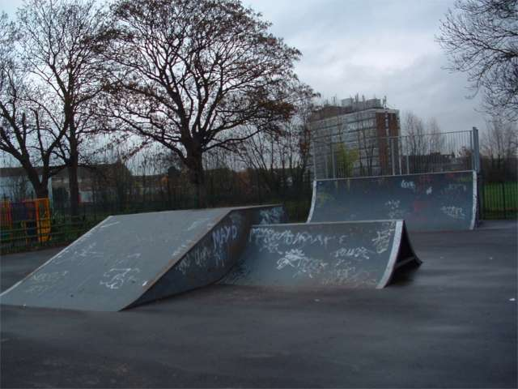
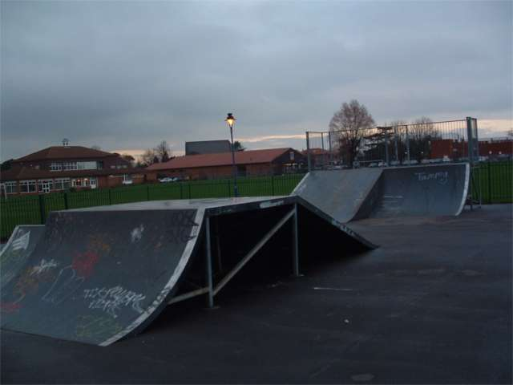
the wooden park: not so slippy as it is wood. a bit worn but still rides
quite nicely. the only problem is that is is down hill and the transition side
of the box means you have to sprint uphill slightly. also the box has a rail
in the middle of it, which isn't even high enough to use pegs on.
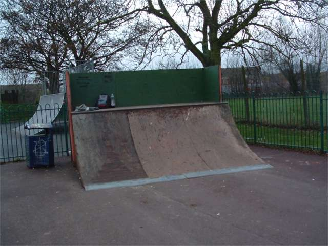
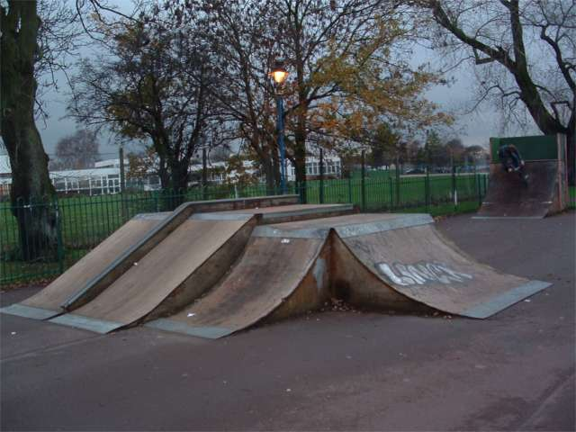
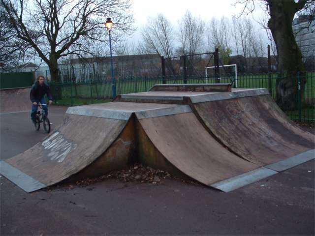
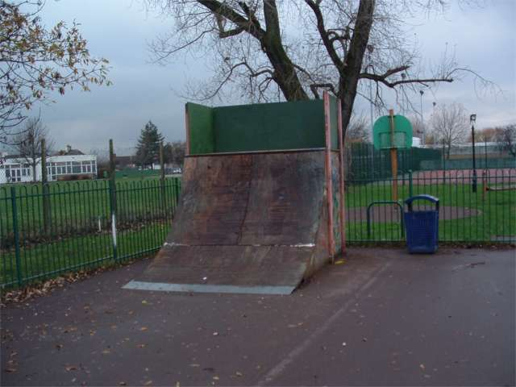
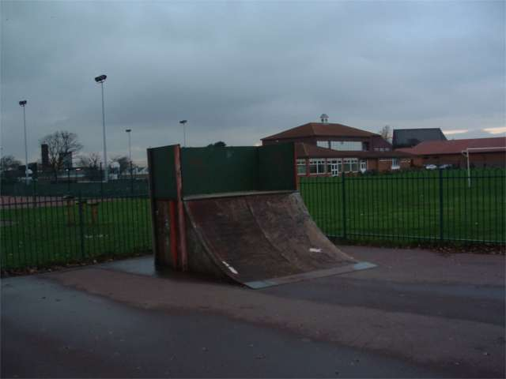
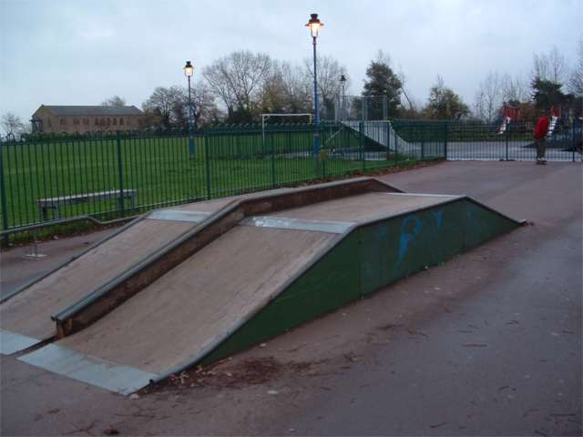
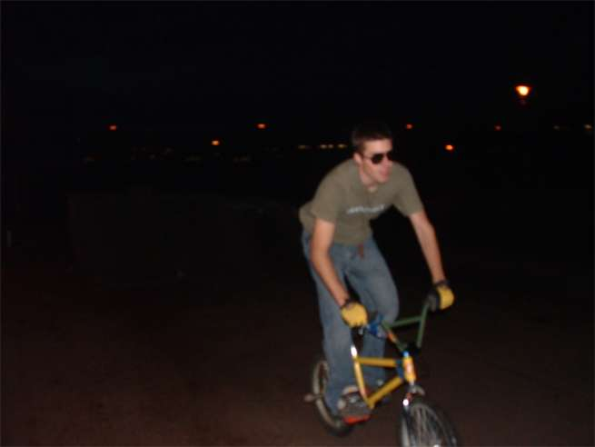
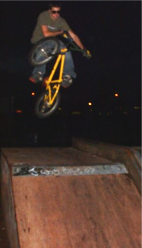
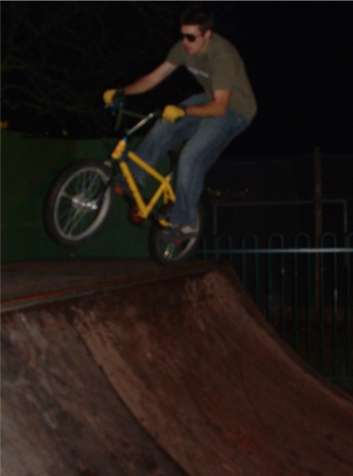
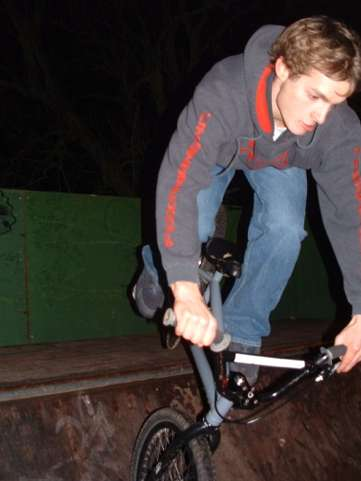